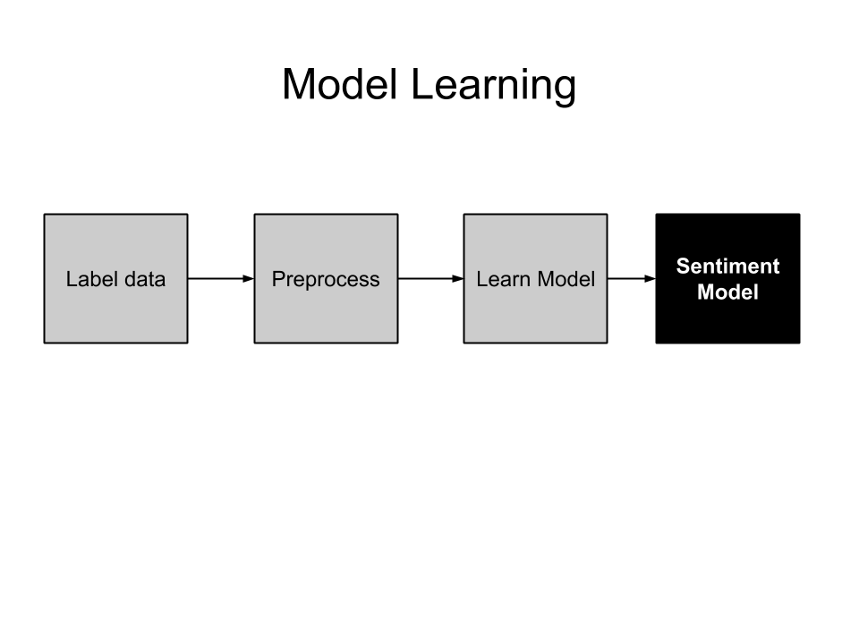

Your browser doesn't support the features required by impress.js, so you are presented with a simplified version of this presentation.
For the best experience please use the latest Chrome, Safari or Firefox browser.
Sentiment analysis with
Python*
@vumaasha
How to build the Blackbox?

Sentiments from movie reviews
This movie is really not all that bad. But then again, this movie genre is right down my alley. Sure, the sets are cheap, but they really did decent with what they had. If you like cheap, futuristic, post-apocalyptic B movies, then you'll love this one!! I sure did!. It's a movie to keep you interested forever.
Sentiments from movie reviews
This must be accompanied by a special rating and warning: NOT RECOMMENDED TO NORMAL PEOPLE.The obsession of Daneliuc with the most dirty body functions becomes here a real nightmare. Also, it's evident that the man is a misanthrope, he hates everybody - his country his people, his actors, his job. And this hatred makes him blind and he forgets anymore the profession he knew long ago.This so called ""film"" is just a hideous string of disgusting images, with no artistic value and no professionist knowledge. It is an insult to good taste and to good sense. Shame, shame, shame
Preprocessing
Tokenization
- converting sentences in to words, removes punctuations and symbols
stemming
- reducing the word to it's root. Running, runs, runner to run.
Filter stop words
- remove useless words - as, from, on, the, to, in ... from the corpus
Generate TF-IDF matrix
- computes term frequency and inverse document frequency for each word in the corpus
Preprocessed data set
Term frequency matrix
Model Learning
- Known as supervised classification/learning in the machine learning world
- Given a labelled dataset, the task is to learn a function that will predict the label given the input
- In this case we will learn a function predictReview(review as input)=>sentiment
- Algorithms such as Decision tree, Naive Bayes, Support Vector Machines, etc.. can be used
- scikit-learn has implementations of many classification algorithms out of the box
Model validation
- We have to validate if our model works
- Split the labelled dataset in to 2 (60% - training, 40%-test)
- Learn the model on the training dataset
- Apply the model on the examples from test set and calculate the accuracy
- Now, we have decent approximation of how our model would perform
- This process is known as split validation
- scikit-learn has implementations of validation techniques out of the box
The Blackbox is ready !!
Let's take a look at the code
preprocess
# load the data from labelled csv file and
# create a term frequency matrix
def preprocess():
data,target = load_file()
count_vectorizer = CountVectorizer(binary='true')
data = count_vectorizer.fit_transform(data)
tfidf_data = TfidfTransformer(use_idf=False).
fit_transform(data)
return tfidf_data
learn model
def learn_model(data,target):
# preparing data for split validation.
# 60% training, 40% test and learning model
data_train,data_test,target_train,target_test = \
cross_validation.train_test_split(data,target,\
test_size=0.4,random_state=43)
classifier = BernoulliNB().fit(data_train,target_train)
predicted = classifier.predict(data_test)
evaluate_model(target_test,predicted)
evaluate model
# evaluating model performance
def evaluate_model(target_true,target_predicted):
print classification_report(target_true,\
target_predicted)
classification report
precision recall f1-score support
negative 0.71 0.91 0.80 409
positive 0.86 0.59 0.70 375
avg / total 0.78 0.76 0.75 784
The accuracy score is 75.89%
credit where credit's due
 Xoanon Analytics - for letting us work on interesting things
Xoanon Analytics - for letting us work on interesting things
Arathi Arumugam - helped to develop the sample code
Shameless plug
Talented students looking for internships are always Welcome!!
mail to: venkatesh.umaashankar[at]
xoanonanalytics(dot)com